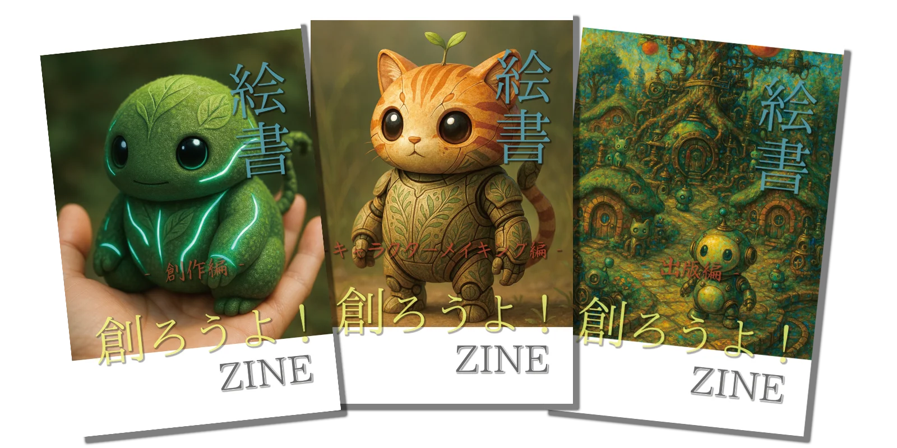

制作の型を、あなたへ。
3編のZINEは、絵書制作の“型”を公開するための記録です。 創作・技術・出版がひとつの流れとしてつながる、その全体像を辿れます。 絵書とアプリケーションが連動するPochomLabの創作世界。 あなた自身の制作へ灯を持ち帰るための、小さな手がかりとなるはずです。
創作編
はじまりの灯を形にするまで
絵書という形式を選び、生成AIと並走しながら制作を進めるための前提をまとめた記録。
試行錯誤の流れをそのまま残した、最初の旅路。
構想づくり、世界観の整理、制作フローの確立。
曖昧さを許容しながら長編制作を続けるための“考え方の基盤”がここにあります。
キャラクターメイキング編
一体のキャラクターが生まれるまで
ランダムな生成結果の中から、ひとつの造形を見出す工程を記録。
シルエット選定、線画化、塗りの統一など、判断の積み重ねを追います。
LoRA学習や構図検証を含む、制作の“実験ログ”。
偶発性を素材として扱い、再現性へ寄せていく過程が、静かに積み重なっています。